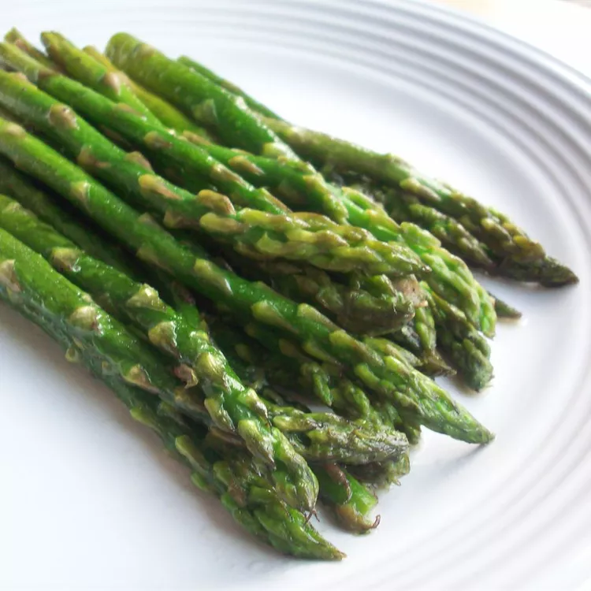

Pan-Fried Asparagus

Description
Learn how to cook asparagus on the stove by pan-frying it in butter with garlic for a delicious italian-style side dish.
Making asparagus on the stove couldn't be easier or more delicious. This pan-fried asparagus recipe will quickly become a mainstay in your side dish rotation.
Ingredients
- 1/4 cup butter
- 2 tablespoons olive oil
- 1 teaspoon coarse salt
- 1/4 teaspoon ground black pepper
- 3 cloves garlic, minced
- 1 pound fresh asparagus spears, trimmed
Directions
- Melt butter in a skillet over medium-high heat. Add olive oil, salt, and pepper; cook and stir until garlic is fragrant, about 30 seconds.
- Add asparagus and cook until fork-tender, turning asparagus often to ensure even cooking, about 10 minutes.